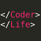

{% for post in paginator.posts %}
<article class="post">
  <h1><a href="{{ site.baseurl }}{{ post.url }}">{{ post.title }}</a></h1>
  <a href="#"></a>
  <div class="excerpt">
    {{ post.excerpt }}
  </div>
  <div class="clear"></div>
</article>
{% endfor %}

<div class="pagination">
  {% if paginator.previous_page %}
    <a href="{{ paginator.previous_page_path }}" class="previous">&laquo; Trang trước</a>
  {% else %}
  {% endif %}
  {% if paginator.next_page %}
    <a href="{{ paginator.next_page_path }}" class="next">Trang sau &raquo;</a>
  {% else %}
  {% endif %}
</div>
